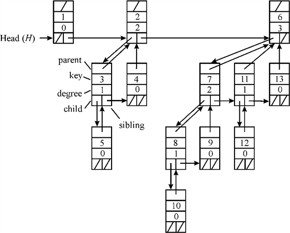

Alternative Implementation of Deletion
Below algorithm is a version of FIB-HEAP-DELETE procedure. It runs faster when the node being deleted is not the pointed to by H.min.
PISANO-DELETE (H, x):
// Checking condition the node is min heap or not.1 if x = min[H]
// refer from the text book, section 19.22 FIB-HEAP-EXTRACT-MIN(H)
// initialize the parent of the node3 else
// checking initialization node is nil or not4 if NIL
// performing cut operation on tree (refer from the text book, section 19.3)5 CUT(H, x, y)
// performing cascading cut operation (refer from the text book, section 19.3) 6 CASCADING-CUT(H, y)
// now adding the child list to the root list7 add child list to the root list of H
// removing the node from root list8 remove x from the root list of H
a. Consider the line 7 of the above algorithm that is:
Add child list to the root list of H
This assumption is based on the condition that X has only
one child (performed in  actual
time). This is wrong because, if the child list of X has
more than two entries, and for collecting every child node, and
then add that to the root list of H, then it may require
more than time. This
is so because there are chances of having more than one child in a
particular node X.
actual
time). This is wrong because, if the child list of X has
more than two entries, and for collecting every child node, and
then add that to the root list of H, then it may require
more than time. This
is so because there are chances of having more than one child in a
particular node X.
This procedure will take  time if
there will be n children of node X and this n
is actually the number of children attached to the node
X.
time if
there will be n children of node X and this n
is actually the number of children attached to the node
X.
So, it can be any number from 1 to n.
b. Each Cascading-Cut procedure runs in time.
Hence, if C calls are made, total time is provides the running time of line 7 because this cost is going to applied on every node of the list and which is find in terms of degree.
If X is not H.min, total running time of this will be where N is the number of members in Heap H because the calls are now going to perform further until the condition of min H is not matched.
c. Fibonacci heap have trees at the maximum marked nodes are
(are the numbers of unmarked nodes by cascading cuts). Therefore, the potential bounded by this term is:
Now, referring to page 509 for equation (19.1)
Potential function:
... ... (1)
The potential function=number of trees +2 times number of marked nodes.
Consider if c be the number of tree added to the root list then c–1 were marked (last call makes node unmarked in cascading-cuts).
Number increases by c and marked node decreases by at least c–2.
Hence the above expression (1) becomes as shown below:
d. As the amortized time of FIB-HEAP-DELETE
is,
the amortized time of PISANO-DELETE can reach a minimum of this
value only. It is due to the fact that the procedure for removing
of children of X and adding them to root of H is a
time taking process and compensates for the decrease in time
generated by PISANO-DELETE.
Hence, the lower limit of amortized time taken by PISANO-DELETE
is also.
This is no better than the FIB-HEAP-DELETE and neither the checking of min heap for a node is effect that because in the last amortized cost nature is same in both the cases because in part (c) nature of final expression is not going to change due to this condition.
BINOMIAL TREES AND BINOMIAL HEAPS
Binomial tree: The binomial tree is represented by the symbol. It is defined in a recursive way and is an ordered tree. It can represent more intuitively with the help of diagram as,
It can be visualize that the binomial tree have a single node and consist of two in which one of them is the leftmost child of the other node.
a. Binomial tree holds the following properties:
1. There are  nodes.
nodes.
In the tree, finding thathas two copies of this is shown below:
By applying process of induction on the given statement,
When k=1,
Therefore, is
true.
is
true.
Assume that the given condition is also holds for all positive integer k. Now it will prove this for next higher integer k+1.
Thus, by mathematical induction  is true.
So, holds for
all natural numbers.
is true.
So, holds for
all natural numbers.
Hence total number of nodes is equal to.
2. The height of the tree is equal to k.
The binomial tree has the tree as the child of the other, .
By applying induction process on k,
So, it can be concluded that the height of the tree is one more than the height of which is equal to.
3. There are nodes at the depth i in which the value of.
Consider that is the number of nodes which is at the depth i in the binomial tree and it is equal to the sum of the number which is at the depth i and which is at the depth i–1 which is shown as:
Hence,
4. The root has the degree k, which is greater than any
other node; and if the children of the root are numbered left to
right by and in
which the child i is the root of the sub-tree ,
,
Any node which have its degree greater than in the binomial tree is the root node in which there is one child more than the. And as deduced above the degree of the root has k-1, and the degree of the root is k.
It can be deduced inductively that have the children which is the root ofwhich is shown below:
Hence, it can be easily concluded that the root has its children.
BINOMIAL HEAPS: Binomial heap is a group of binomial tree which is represented by the symbol H. It obeys the binomial heap properties which are as follows:
1. It is like a Fibonacci heap in which each node has a key.
2. It should satisfy min-heap property which implies key of the parents node is less than or equal to key of its child nodes.
3. There is minimum one binomial tree of degree k in binomial heap H where k is a nonnegative integer.
Binomial heap can be represents more intuitively with the help of diagram as shown:
It can be visualize that binomial heap is a combination of three binomial tree which are.b. With the reference to the 2nd property it is derived that the smallest key of the binomial tree is the key of the root node. By using the third properties it is clear that in an n-node binomial heap the number of trees is at most. The binary representation of the node n and the H is defined as,
By using First property of the Lemma which implies contains
2i nodes so that appears in
the heap H if 1 holds
well. And hence it is concluded that the H consists of at
most
binomial trees.
contains
2i nodes so that appears in
the heap H if 1 holds
well. And hence it is concluded that the H consists of at
most
binomial trees.
Consider an example that can be used for proving that H consists of at most binomial trees. Suppose a heap is consisting of 12 nodes. Then
12= <1, 1, 0, 0>2
Consist of two binomial trees.
In the above diagram it is clear that, if the binomial heap contains 12 nodes then there are two binomial trees in the binomial heap which are.Then by using the third properties it is clear that in an n-node binomial heap the number of trees is at most. So if the value of n=12.
Number of binomial trees in binomial heap H
So, it is clear from the above example the total number of binomial trees in binomial heap are 2.
c. Binomial heap: Binomial heap which is represented by H is a group of binomial trees. It obeys the binomial heap properties which are as follows:
1. It should satisfy heap-ordered property which implies key of the parents node is less than or equal to key of its child nodes.
2. There is minimum one binomial tree of degree k in binomial heap H where k is a nonnegative integer.
Representation of the binomial heap: T he binomial tree with the help of left-child; right-sibling is represented in such a way that the node b has a pointer for its leftmost child as b.child, b.sibling for its immediate right sibling and b.p for its parent. And it also contains a field for the data in which the number of children in b.degree.
As represented in the figure- organize the roots of the tree with the help of linked list, the root list. The degree of the root increases monotonically as the root list is traversed. Now for the root b, the b.sibling use to point to the next root in the list and as usual the NIL is the undefined pointer. Representation of binomial heap is shown by following example: Suppose a heap is consisting of 13 nodes. Then,
13= <1, 1, 0, 1>2
Consist of three binomial trees.
Binomial heap is represented by using linked list arranged in the order of increasing degree is as shown:

Operation performed on the binomial heap: Various operations on the binomial heaps are as shown below:
1. MAKE-HEAP:
To create an empty-heap MAKE-HEAP used to allocates and the object H is returned. The worst case running time for the MAKE-HEAP algorithm isas for the creation of heap it runs only once.
2. MINIMUM:
Its procedure is as,
BINOMIAL-HEAP-MINIMUM (H)
// make a pointer to the current value of min
b=NIL
a=H.head
min=infinity
// check condition
while a != NIL
do
if a.key < min
then min=a.key
b=a
a=a.sibling
return b
// end
A pointer is returned to the nodes which have the minimum key by the procedure. And as discussed the binomial-heap is a min-heap so the minimum must lie in the root so in this we only need to check in the root list for nodes.
Hence, the running time is  .
.
3. UNION: It is done by the uniting of two Binomial-Heaps. It generally links the Binomial trees which have the same size.
BINOMIAL-HEAP-UNION (H1, H2)
H=MAKE-HEAD ()
H.head = BINOMIAL-HEAP-MERGE (H1, H2)
make H1 and H2 as free
if H.head = NIL
then return H
a.prev = NIL
a = H.head
a.next = a.sibling
// check condition
while a.next != NIL
do
if (a.degree != degree [a.next]) or (sibling [a.next] != NIL and degree [sibling [a.next]] = a.degree)
then a.prev = a
a = a.next
else if a.key =< key [a.next]
then a.sibling = sibling [a.next]
// BINOMIAL-LINK is called
BINOMIAL-LINK (a.next, a)
else if a.prev = NIL
then H.head = a.next
else
sibling [a.prev] = a.next
// BINOMIAL-LINK is called
BINOMIAL-LINK (a, a.next)
a = a.next
a.next = a.sibling
return H
//end
This procedure unites the heaps H1 and H2 and destroys them. It works in two phases-in the first phase we have BINOMIAL-HEAP-MERGE in which the roots of H1 and H2 are merged into a single linked-list and in the second phase we have BINOMIAL-HEAP-UNION.
Consider that the heap H1 have n1 nodes and the heap H2 contains n2 nodes, so the total number of nodes that the H contains is equal to n=n1+n2 nodes. And as we have H1 which have at most +1 roots and the H2 have root so the heap H have at most roots.
Here the running time for the BINOMIAL-HEAP-MERGE is equal to
 .and each of
the iteration in the while loop takes time.
Hence, the total iterations are equal to. Since in
the each iteration, one of the roots is removed. Therefore the
phase 2 also takes time.
.and each of
the iteration in the while loop takes time.
Hence, the total iterations are equal to. Since in
the each iteration, one of the roots is removed. Therefore the
phase 2 also takes time.
So, the overall complexity is equal to the
.
4. INSERTION:
BINOMIAL-HEAP-INSERT (H, a)
// MAKE-HEAP is called
H’ = MAKE-HEAP ()
a.p = NIL
a.child = NIL
a.sibling = NIL
a.degree = 0
H’.degree = a
// BINOMIAL-HEAP-UNION is called
H = BINOMIAL-HEAP-UNION (H, H’)
Consider that the node a has been allocated and its key
value a.key is set, then the, BINOMIAL-HEAP-INSERT
make an insertion into the heap H by keeping it in the heap
H’ which have a single element which have the time
complexity as  and by
making the union with H we have the overall complexity
as.
and by
making the union with H we have the overall complexity
as.
5. Minimum Heap Extraction:
BINOMIAL-HEAP-EXTRACT-MIN (H)
1. The root a is searched which have the minimum key in the root list and the
node a is removed from the list
// MAKE-BINOMIAL-HEAP is used
2. H = MAKE-BINOMIAL-HEAP is used
3. Then the order of the linked list is reverse in such a way that H’.head point to the list head
// BINOMIAL-HEAP-UNION is used
4. H = BINOMIAL-HEAP-UNION (H, H’)
5. return a
// end
The line 1 and 4 take time and
line number 3 takes times and
the line 2 and 5 takes time. Hence
the overall complexity is equal to.
6. Decreasing a key:
BINOMIAL-HEAP-DECREASE-KEY (H, a, k)
if k > a.key
then error “key.new > key.current”
a.key = k
b = a
c = b.p
while c != NIL and b.key < c.key
do
exchange b.key and c.key
// also exchange the data if any
b = c
c = b.p
Since the while loop iterates for the maximum of times. So,
the procedure has the time complexity of.
7. Deleting a key:
BINOMIAL-HEAP-DELETE (H, a)
BINOMIAL-HEAP-DELETE (H, a, – )
)
BINOMIAL-HEAP-EXTRACT-MIN (H)
BINOMIAL-HEAP-DECREASE-KEY bubbles are infinity to the root,
where it is removed by BINOMIAL-HEAP-EXTRACT-MIN. Since,
both procedures run in time, so
does BINOMIAL-HEAP-DELETE.
d. MERGEABLE-HEAP: MERGEABLE HEAP is the data structure for maintaining the dynamic set of items with the help of keys. It supports five operations which are as follows:
It creates and returns a new empty heap.
: It is used to insert node a into the heap H whose the key field is set.
: A pointer is returned to the node in the heap H whose value of key is minimum.
: The node whose key is minimum in H is deleted and a pointer is returned to it.
: A new heap is created and returned which have all the nodes of heap H1 and H2. And in this operation both the heap H1 and H2 are destroyed. Both the operations are supported by the Binomial and Fibonacci heaps which are merging able heaps.
: The node a is assigned the new key value of k which is supposed to be the current key. : It deletes node a from the heap H.
Binary heaps has a better performance of except for
UNION, which takes  time.
time.
The relationship between the worst case complexity for the Binomial Heap and the Fibonacci Heap is illustrated below:
|
operation |
Binomial-heap (worst-case) |
Fibonacci-heap (AMORTISED) |
|
MAKE-HEAP |
|
|
|
UNION |
|
|
|
INSERT |
|
|
|
MINIMUM |
|
|
|
EXTRACT-MIN |
|
|
|
DECREASE-KEY |
|
|
|
DELETE |
|
|
Both the heaps are not efficient for the search operation so the
operation DECREASE-KEY and DELETE have a pointer for the given
node. Also show that the maximum degree in the n-node
Fibonacci heap is . It can be
deduced inductively.
. It can be
deduced inductively.
Consider that the entire heap which has the m nodes has a
maximum degree. And show
that a heap has an n-node and has a maximum degree
of.
Now, consider a heap having n-nodes. The height of this node is one greater than its parent (since we are not in the base case).
Hence, its maximum degree is by the induction hypothesis. It can also be derived that for the nth node the maximum degree as.
Hence it can be concluded that the maximum degree of the
n-node in a Fibonacci-heap is.
MCGEE HEAP: It is a heap in which the implementation of all the operation is same as the Fibonacci heap which supports all the Mergeable-Heaps operations instead of insertion and union.
e. It can be observed, that the Fibonacci Heap in
which all the Mergeable operations are supported is one of the
collections of the binomial-trees. This heap contains maximum n
nodes. Hence the largest degree is of.
As discussed the consolidation of roots is performed after the Union and the Insertion operation, it lead the entire binomial tree in the MCGEE-Heap in such a condition that the order is different. This case is also observed after the operation DELETE-min.
Hence it can be concluded that the MCGEE-Heap is a well known Binomial-Heaps.
So the complexity will be as follows:
|
operation |
Binomial-heap (worst-case) |
|
MAKE-HEAP |
|
|
UNION |
|
|
INSERT |
|
|
MINIMUM |
|
|
EXTRACT-MIN |
|
|
DECREASE-KEY |
|
|
DELETE |
|
Augmentation of Fibonacci heap
Fibonacci heap is a structural model which is a grouping of several heaps. Fibonacci heap performs all the operations of mergeable heap. One more property of Fibonacci heap is that the time taken operations is constant amortized. They have a better running time than the normal binomial heap. Fibonacci heap is composed of a set of heaps. Every heap fulfills the minimum requirement of a min-heap.
So in the heap, each key is either equal to or greater than the value of its parent’s key.
The diagram above shows a Fibonacci heap. In the diagram it can be inspected that the value of the key of each and every node is either larger than or equal to the key of its parent. The dotted line denotes the nodes located at the root or base of the heap.
Operations on Fibonacci heap: The operations that come under mergeable heap are given below:
MAKE-HEAP ():
This procedure is used for the creation of a heap that has no
element in it, initially. The amortized execution time of this
procedure is .
.
INSERT (H, e):
This operation is used to insert a new element e in heap
H. In this case, the key for element e is already
there in heap H. Locating the key in the heap takes constant
amount of time and the equal time is taken in inserting a node in
the heap. This operation is completed in the constant amount of
time and the amortized time taken by this operation is.
MINIMUM (H):
This operation finds the minimum key from the meargeable heap and then returns a pointer that point to that element. Like the insertion, in this case also, the key value of the node can be located in the constant amount of time. The amortized time taken by this operation is also.EXTRACT-MIN (H):
This operation is similar to MINIMUM (H) operation except
that it deletes the item from the heap.In this operation first of
all the minimum key is removed from the heap. Now as the element
having the minimum value has been deleted, the kids of that key
must be brought to the root. The execution time of this operation
is dependent on the number of nodes. The amortized time taken by
this task is.
UNION (H1,H2):
This operation is used to connect two heaps. In this, a new heap
is created holding the items of both of the heaps. Once the new
heap is created, both of the previous heaps are removed from the
memory. The amortized time taken by this operation is.
In the amortized completion time, the average cost is calculated. This keeps the running cost of operations small. Including mergeable heap operations, Fibonacci heap is also comprised of two more operations: DECRASE-KEY and DELETE.
For Fibonacci heap operations, the amortized running time of
DELETE and EXTRACT-MIN operations isand rest of
operations have amortized running time of. For making
any new operation, no change in amortized running time means that
the working part of operations should not been changed.
a . Consider be the given
heap,
be the given
heap,  be the node
whose value is to be replaced by
be the node
whose value is to be replaced by . In this
the value and position is taken from the user and the value at the
node has been replaced by the key. Algorithm for this given
below:
. In this
the value and position is taken from the user and the value at the
node has been replaced by the key. Algorithm for this given
below:
FIB-HEAP-CHANGE-KEY(H, x, k)
// Use of if condition to check if the value of k is less than the value of x.key
1. if ()
//When the condition is met, assigning of element in heap that has valuekin it
//is done
2. then FIB-HEAP-DECREASE-KEY(H, x, k)
//If the value of k is larger than x.key, then delete item x from heap
3. else Fib-Heap-Delete(H, x)
//create a new node that the value should be inserted in
4.
//Now, insert the node in the heap
5. FIB-HEAP-INSERT (H, y)
Explanation of the procedure:
First of all line 1 checks if the keyof item xis less than or equal to the value of k. If this is true then the procedure FIB-HEAP-DECREASE-KEY () is called in the line 2 of the procedure. This procedure would not generate a new node rather it would replace the old valuewith the later one.
If the condition is not true, line 3 is executed. This line would remove the element from the heap. Now as the latest value has to be located exactly from where the old value was deleted. To get it done, a new node has to be created and then placed in the heap. So, allocate the memory for the newly created node and assign the key value to it as the key. This would be done in the line 4 of the procedure.
Ultimately line 5 inserts the new node in the heap by invoking the procedure FIB-HEAP-INSERT (). This way the key value of the item can be altered and the new value can be put in. In the algorithm given above, the time required by the operations Fib-Heap-Insert (H, y) and Fib-Heap-Decrease-Key (H, x, k) is equal to O(1) and time taken by operation Fib-Heap-Delete(H, x) is O(log n). It is because the procedure of inserting any element and decreasing key would need only one step and in order to delete an element, the position should be taken into consideration.
Amortized time analysis of procedure
Keeping the values of x.key and k in the mind as the base values, there would be three cases. The key provided for replacement of the previous value can be less than the current key of the node, equal to the previous key value or larger than the key value of the node.
Amortize completion time for all of the above said cases are given below:
Case 1: : When the value of , then the amortized time will be
O (lg n)+O(1). This is the time taken in
locating the node and changing it with the new value. The time
taken in locating the node would be and the
node can be changed in the constant time. This makes the amortized
running time equal to.
Case 2: :
When the value of, the
operation Fib-Heap-Decrease-Key (H, x, k) is
performed. This operation takes time of. So, in
this case, the amortized completion time must be constant and that
is.
Case 3: : When the value of, then the amortized tome will be O(1). It is because the operation Fib-Heap-Decrease-Key(H, x, k) is performed, which takes time of O(1).
b . FIB HEAP PRUNE operation is used to delete node from the heap. In this operation, two arguments (heap and number of nodes) are passed. After this, the number of nodes that should be deleted is calculated.
This can be achieved by locating the minimum from the set of nodes of the heap and getting the number of nodes user wants to delete. It is because if user enters more number of nodes than the total items available in the heap, the procedure would provide a remedy by finding the minimum of these values. After this, the elements are deleted by using for loop.
In a Fibonacci Heap, the nodes can be deleted from leaves, so no rearrangements are to be implemented. Therefore, each single node deletion will take time O(1).
The algorithm for this is given below: The function takes two arguments in it. H is the heap and r is the number of nodes that user wants to delete.
FIB-HEAP-PRUNE (H, r)
//Find the minimum value between the entered value and size of the heap and store it in
// the variable q
1.
//Use of for loop to delete q number of items from the heap
2. for
//Assign the new value to x
3. FIB-HEAP-DECREASE-KEY(H, x, -infinity)
//Extract the newly build heap
4. FIB-HEAP-EXTRACT-MIN(H)
Explanation of the procedure:
The procedure is meant for deleting a random number of values from the heap. The approach used over here makes it by traversing the entire nodes and accessing the node that must be removed from the heap. This is done as follows:
In the line 1 of the procedure the search has to be initialized. This can be done by setting the initial point of search at the start of the heap. There remains apossibility that a user enters a number bigger than the total number of items in the heap.
In that case, the procedure willbe unable to remove the desired number of nodes. So the procedure to find the minimum value can be invoked. If the number of nodes is less than the value supplied as argument, that would be the new minimum value in the heap. The value that is found can be accumulated in a variable. This is what the line 1 of the procedure does.
In the line 2 initialize a loop. This run till the minimum value
is reached. Inside the loop the procedure FIB-HEAP-DECREASE-KEY
would be called. This is what happens in the line 3 of the
procedure. This procedure would in turn make a new heap that has
node x as the root. One more thing that is to be ensured is
that the new value must not be greater than the current value of
the node. This is required to preserve the property of the
min-heap. This is done by assigning the value  to the node
and this way the property of the min-heap is not violated.
to the node
and this way the property of the min-heap is not violated.
Now the task is to delete the minimum value from the heap. This helps in getting the required value deleted from the tree. This is done with the help of line 4. Line 4 calls the procedure FIB-HEAP-EXTRACT-MIN. This procedure would find the minimum value from the heap and delete it.After being through, the procedure also takes the update of the pointers appropriately into the account.
Once this is done the next repetition of the loop happens and so on. This would happen till the minimum value is reached. This way all the nodes after the minimum value are ignored and a new heap with less number of nodes is created. After all, the desired number of nodes is deleted from the heap and a new heap with less number of nodes is created.
Amortized time analysis of procedure:
Amortized completion time analysis can be performedas shown:
As the loop provides the completion time of and the
running time provided by FIB-HEAP-DELETE is .So running
time will be. Here
q is the number of deleted elements and n is the
number of nodes.
A potential function is used for mapping of data structure with real number. The amortized completion time for ith number of operation can be given as:
, where ci is the original cost and is potential change due to operation. So, for the operation FIB-HEAP-PRUNE, the potential distinction will be equal to the negated value of the number of deleted nodes, which is –q.
Amortized cost
So, the amortized completion time for FIB-HEAP-PRUNE (H, r) is.